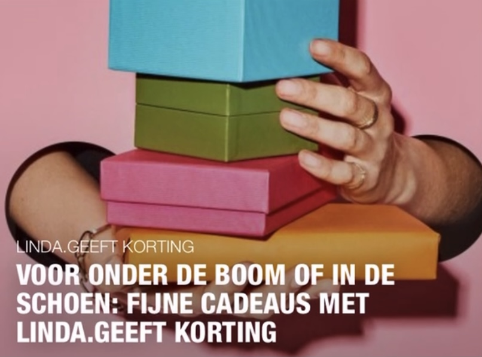

Liveblog
Studenten: 'Schrap bindend studieadvies in de abnormale tijden'
25.11.2020 | 08:06 uur
Bekend
'Jar of Hearts'-zangeres Christina Perri verliest baby: 'Ze is nu in vrede'
25.11.2020 | 08:00 uur
Binnenland
Politie verwachts nieuwe piek in online oplichting tijdens Black Friday
25.11.2020 | 07:34 uur
Advertorial
Buik vol van je vetrol? Alles wat je wil weten over buikwandcorrecties en liposuctie
Wat goééééd
Schotland maakt als eerste land ter wereld dameshygiëneproducten gratis
25.11.2020 | 07:25 uur

Binnenland
Nieuwe online test moet ervaren automobilisten inzicht geven in rijgedrag
25.11.2020 | 07:02 uur
Neem hier even de tijd voor
Interview
Pauline miste begrafenis van vriendin omdat livestream-link niet werkte
Lief & leed
Moet je even zien
Broer en zus of een relatie? Dat is de grote vraag op dit Instagram-account
24.11.2020 | 17:48 uur
Lief & leed
Ezy (30) trouwde in Gambia zonder haar familie: 'Alles is last-minute geregeld'
24.11.2020 | 14:34 uur
Daar is-ie dan
Anne beviel zes weken te vroeg van haar tweeling: 'Dat was heel heftig'
23.11.2020 | 19:00 uur
Advertorial
Joric (20) werd blind op zijn negende: 'Mijn buddyhond verbreedt mijn horizon'
Tikkie te veel
Amal kreeg een Tikkie van 30 cent voor kauwgom: 'Ik ben nog steeds boos'
23.11.2020 | 11:00 uur

Interview
Opgroeien in een arm gezin: 'Mama deed álles voor ons'
22.11.2020 | 15:00 uur

Werpsterren
Kathelijne (toen 18) beviel plotseling op de wc:' Ik raakte volledig in paniek'
22.11.2020 | 11:00 uur
Samen sterk
Marrit (52) verloor man en dochter: 'Rouwen en leven bestaan naast elkaar'
22.11.2020 | 09:00 uur
Linda. loves
Asjemenou
Veganisten lopen meer risico op botbreuken (maar kunnen dat voorkomen)
24.11.2020 | 07:48 uur
Advertorial
Hoe maak je contact met je publiek? Met deze handige tips lukt het

Mode
Ze zijn (geen grap) weer hip dit najaar: UGG-sloffen
23.11.2020 | 12:12 uur
.jpg)
Wil je weten
Koks Buckingsham Palace delen recept van traditionele kerstpudding
22.11.2020 | 12:43 uur
Meest gelezen
Mode
Ze zijn (geen grap) weer hip dit najaar: UGG-sloffen
Kijken

Antonie & Merlijn: 10 jaar later
Bekijk hier de documentaire 'Antonie & Merlijn: 10 jaar later'
Linda.Originals


Linda.podcast